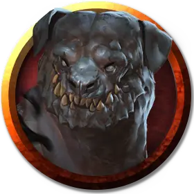

Альфа теневой мастиф
Shadow Mastiff Alpha
Средний Монстр, нейтрально-злой

Класс Доспеха 12
Хиты 42 (8к8 + 6)
Скорость 40 футов
| мод | спас | ||
|---|---|---|---|
| СИЛ | 16 | +3 | +3 |
| ЛОВ | 14 | +2 | +2 |
| ТЕЛ | 13 | +1 | +1 |
| мод | спас | ||
|---|---|---|---|
| ИНТ | 6 | −2 | −2 |
| МДР | 12 | +1 | +1 |
| ХАР | 5 | −3 | −3 |
Навыки Восприятие +3, Скрытность +6
Сопротивление урону дробящий, колющий, рубящий от немагических атак при нахождении в тусклом свете или темноте
Чувства тёмное зрение 60 футов, пассивное Восприятие 13
Опасность 2 (450 опыта)
Бонус мастерства +2
Среда обитания Болото, Лес, Холмы
Особенности
Эфирное восприятие. . Теневой мастифф может видеть эфирных существ и объекты.
Острый слух и нюх. . Теневой мастифф имеет преимущество на проверки Мудрости (Восприятие), основанные на слухе или запахе.
Затеряться в тенях. . Будучи в тусклом свете или темноте, теневой мастифф может использовать бонусное действие и стать невидимым, вместе со всем, что на нем надето и что он несет. Невидимость длится до того как мастифф использует бонусное действие, чтобы её окончить, или до того как мастифф нападет, окажется на ярком свете или недееспособным.
Чувствительность к солнечному свету. . Будучи на ярком солнечном свете, теневой мастифф получает помеху на броски на попадание, проверки способностей и спасброски.
Действия
Укус. . Рукопашная атака оружием: +5 к попаданию, досягаемость 5 футов, одна цель. Попадание: 10 (2к6 + 3) колющего урона. Если цель является существом, то она должна преуспеть в спасброске Силы Сл 13 или оказаться сбитой с ног.
Ужасающий вой. Теневой мастифф воет. Любой зверь или гуманоид не далее 300 футов от мастиффа, который может его слышать, должен преуспеть в спасброске Мудрости Сл 11 или стать испуганным на 1 минуту. Испуганная цель может повторить спасбросок в конце каждого своего хода, заканчивая эффект при успехе. Если спасбросок цели успешен или эффект на ней заканчивается, то цель получает иммунитет к Ужасающему Вою любого теневого мастиффа на следующие 24 часа.
Описание
Эти чёрные псы из Царства Теней двигаются невидимо по теням и всегда охотятся. В мрачных местах, где завеса между Царством Теней и Материальным Планом тонка, они могут пересекать её и попадать в темные уголки мира.
Хищные Соглядатаи. Теневые мастиффы охотятся стаями по Царству Теней, и когда один из них входит в разлом между планами, ещё несколько конечно же последуют за ним. В каждой стае главенствует альфа (самец или самка), самый умный и сильный в отряде. Альфа должен оставаться в форме, чтобы держать остальную стаю в подчинении, чтобы его не убили и не сменили.
Когда стая теневых мастиффов голодна и чувствует добычу неподалеку, то альфа завывает так, что страх вселяется в сердца ближайших зверей и гуманоидов. Этот вой так же является сигналом остальной стае выдвигаться и убивать. Мрак даёт теневому мастиффу сверхъестественную защиту, что даёт ему сопротивление немагическому оружию, если он находится в тусклом свете или темноте. Теневые мастиффы могут терпеть яркий свет, но избегают солнечного света.
Призванные на Службу. Некоторые религии, посвященные божествам мрака и тьмы, таким как Шар в Забытых Королевствах, совершают нечестивые обряды для призыва теневых мастиффов из Царства Теней и назначают их стражами, телохранителями и карателями неверных, еретиков и вероотступников. Методы приведения теневых мастиффов в мир также известны и другим индивидам с сильной волей и злым разумом, которые находят применение псам как стражам в своих цитаделях.
Эфирное Зрение. В дополнение к своим другим способностям, теневой мастифф может видеть существ и объекты на Эфирном Плане. Экстрапланарное восприятие делает мастиффа особенно даровитым стражем, особенно в ситуациях, когда возможно магическое или духовное вторжение.